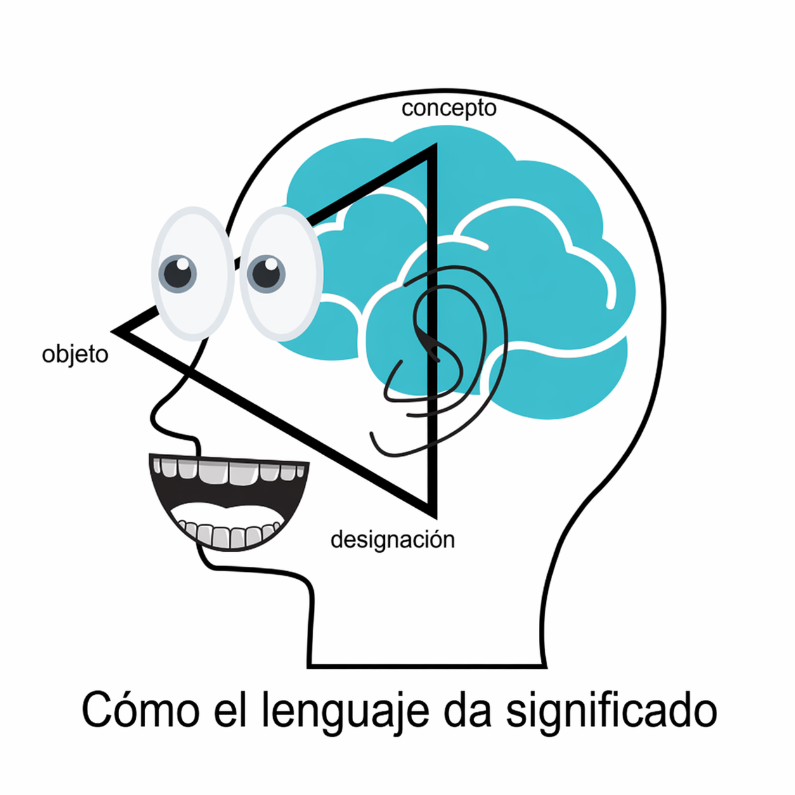

Terminología e IAG
Por Alaina Brandt. Traducido por Oscar Mascott
En la rápida evolución del paisaje tecnológico de hoy en día, entender como comunicarnos y generar significado es más crucial que nunca. Esta exploración aborda dos campos interrelacionados: ciencia de la terminología - el estudio de como las personas entienden y denominan conceptos - y la inteligencia artificial generativa (IAG). Examinando estas áreas juntas, podemos entender mejor tanto sus retos como las oportunidades en la comunicación humano-máquina.
Fundamenentos de teoría de terminología
El trabajo de terminología es típicamente usado para asegurar la cualidad en las actividades tales como escritura, traduccón e interpretación. Para aquellos quienes están en el negocio de comunicación con personas, la terminología es un tema importante a entender. Para entender por qué, podemos examinar el Triángulo Semántico o Semiótico, un modelo que ilustra el entendimiento humano. También conocido como el Triángulo del Significado, las ideas presentadas en el triángulo de la semántica son simples enough?.
- En una de las esquinas del triángulo tenemos objetos - cualquier cosa percibida o concebida por ISO 704.
- Otra esquina es para conceptos, o la abstracción en la mente humana de conceptos.
- En otra esquina tenemos designaciones, o las palabras en idiomas que son usadas para etiquetar abstracciones de objetos.
Estos objetos juntos es la forma en que los humanos dan significado al mundo a su alrededor. Aún así, como señalo en el artículo Comenzando con la Gestión Terminológica: “Dicho esto, es importante recordar que no sólo porque las comunidades de usuarios utilicen lenguaje común, quiere decir que estos hablantes compartan la misma exacta conceptualización de cada objeto designado.” Todos tienen sus propias ideas únicas sobre lo que hace un objeto físico una cosa y sobre las ideas abstractas como la amistad o el aseguramiento de la calidad.

Desafíos en IA Generativa y Terminología
El surgimiento de la IA generativa textual ha despertado discusiones interesantes dentro de los círculos de terminología sobre sus implicaciones en el Triángulo Semántico. A diferencia del uso tradicional del lenguaje, donde las palabras conectan los conceptos y los objetos del mundo real, la IA textual opera únicamente al nivel de designaciones (Dr. Sue Ellen Wright, conversación personal, 2024). Procesa el lenguaje a través de patrones numéricos y agrupamientos por similitud, sin un entendimiento real de los conceptos o conexión con referencias del mundo real. Esta desconexión fundamental de los componentes conceptual y referencial del triángulo explican por qué la IA generativa puede producir alucinaciones o resultados imprecisos.
Gráficas de Conocimiento: La Solución a la Terminología en la IA Generativa
La gráfica de conocimiento ofrece una prometedora solución a estos desafíos de precisión con la IA. Una gráfica de conocimiento es una forma estructurada de representar lenguaje especial donde los conceptos del mundo real y los objetos se vuelven entidades (nodos) conectados por relaciones (aristas o bordes). El lenguaje especial es un lenguaje natural usado en el campo temático y caracterizado por el uso de medios de expresión específicos (ISO 1087). Cuando los datos de terminología recuperados en lenguaje especial son estratégicamente modelados dentro de tal gráfica, pueden ser integrados en los sistemas de IA generativa para mejorar la calidad del resultado más allá de lo que es posible con grandes modelos de lenguaje.
Terminología e IAG Textual: Conclusiones
Las ventajas clave de usar gráficas de conocimiento terminológicas con IAG incluyen:
- Mejorar la precisión a través de relaciones estructuradas entre conceptos
- Mejor manejo de términos ambiguos a través de contenido explícito
- Habilidad mejorada de verificar información contra conocimiento establecido
- Mapeo de terminología interlingüe más confiable
Prueba Tu Conocimiento
Ahora que aprendiste un poco sobre el arte de la terminología, prueba tu conocimiento de los conceptos claves realizando el siguiente cuestionario.